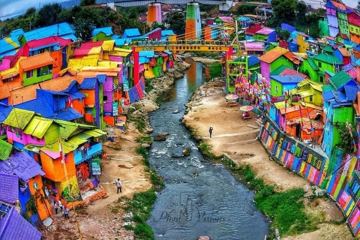

Kota Malang adalah kota terbesar kedua di Jawa Timur setelah Surabaya, dan kota terbesar ke-12 di
Indonesia. Kota
ini didirikan pada masa Pemerintahan Belanda pada tanggal 1 April 1914, yang dimana E.K Broeveldt sebagai wali kota
pertama,Kota Malang
dikenal baik sebagai Kota Pendidikan
. Kota ini memiliki berbagai perguruan tinggi terbaik seperti Universitas Brawijaya, Universitas Negeri
Malang, UIN Maulana Malik Ibrahim Malang, dan Politeknik Negeri Malang. Selain itu, kota ini merupakan kota
pariwisata karena alamnya yang menawan yang dikelilingi oleh pegunungan serta udaranya yang sejuk.
Wilayah cekungan Malang telah ada sejak masa Prasejarah sebagai kawasan pemukiman. Banyaknya sungai yang mengalir di sekitar tempat ini membuat wilayah Malang menjadi kawasan pemukiman. Wilayah Dinoyo dan Tlogomas diketahui merupakan kawasan pemukiman prasejarah. Selanjutnya, berbagai prasasti (misalnya Prasasti Dinoyo), bangunan percandian dan arca-arca, bekas-bekas fondasi batu bata, bekas saluran drainase, serta berbagai gerabah ditemukan dari periode akhir Kerajaan Kanjuruhan (abad ke-8 dan ke-9) juga ditemukan di tempat yang berdekatan.
Munculnya Kerajaan Kanjuruhan tersebut, oleh para ahli sejarah dipandang sebagai tonggak awal pertumbuhan pusat pemerintahan yang sampai saat ini, setelah 12 abad berselang, telah berkembang menjadi Kota Malang. Oleh karena itu, kerajaan tersebut dianggap sebagai cikal bakal kota ini.
Setelah kerajaan Kanjuruhan, pada masa emas kerajaan Singhasari di daerah Malang masih ditemukan satu kerajaan yang makmur. Ketika Islam menaklukkan Kerajaan Majapahit sekitar tahun 1400, Patih Majapahit melarikan diri ke daerah Malang. Sultan Mataram dari Jawa Tengahlah yang akhirnya datang dan berhasil menaklukkan daerah ini pada tahun 1614.
Pada masa penjajahan kolonial Hindia Belanda, tepatnya pada 1 April 1914, daerah Malang dijadikan wilayah gemente (kotapraja). Kota Malang modern tumbuh dan berkembang setelah hadirnya administrasi kolonial Hindia Belanda. Fasilitas umum direncanakan sedemikian rupa agar memenuhi kebutuhan keluarga Belanda. Pada masa kependudukan Jepang di Indonesia, Bala Tentara Dai Nippon mulai menduduki Kota Malang pada 7 Maret 1942.
Pada masa kependudukan Jepang pun terjadilah peralihan fungsi bangunan. Rumah-rumah tempat tinggal orang Belanda diallihkan fungsinya. Bangunan Belanda di Jalan Semeru No. 42 yang dulunya digunakan sebagai kantor ataupun markas pasukan Belanda dialihfungsikan menjadi gedung Kentapetai.
Kota Malang sudah mengalami beberapa kali pergantian pemerintah. Pada Abad ke-8 M, Malang menjadi ibu kota Kerajaan Kanjuruhan dengan rajanya, yaitu Gajayana. Setelah Belanda masuk, pemerintah memusatkan kedudukannya di sekitar Kali Brantas. Pada 1824, Malang mulai mempunyai asisten residen karena sudah menjadi afdeling dan ditetapkan sebagai kotapraja (stadsgemeente) pada 1914. Malang menjadi bagian Republik Indonesia pada 21 September 1945 dan dimasuki kembali pada 2 Maret 1947 setelah diduduki kemballi oleh Belanda. Pemerintah diubah menjadi Pemerintah Kota Malang pada 1 Januari 2001.
